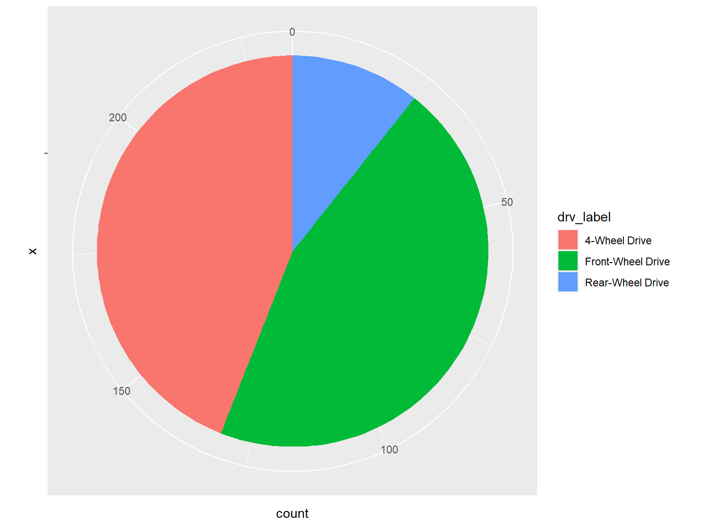
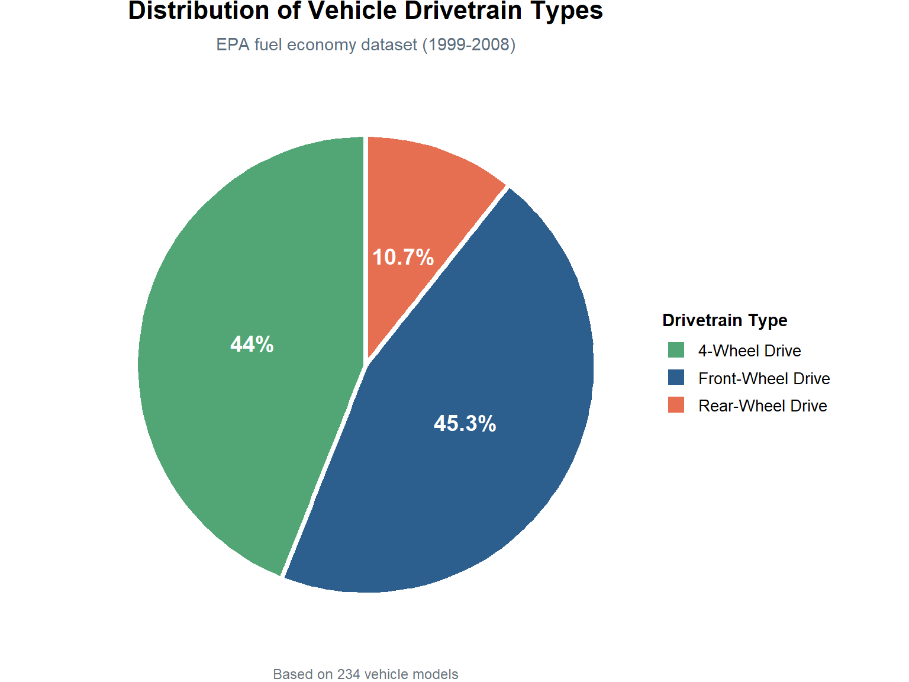
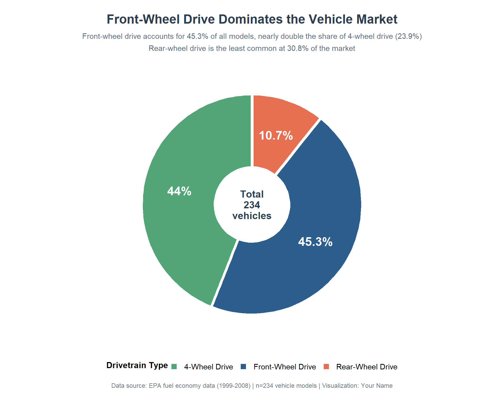
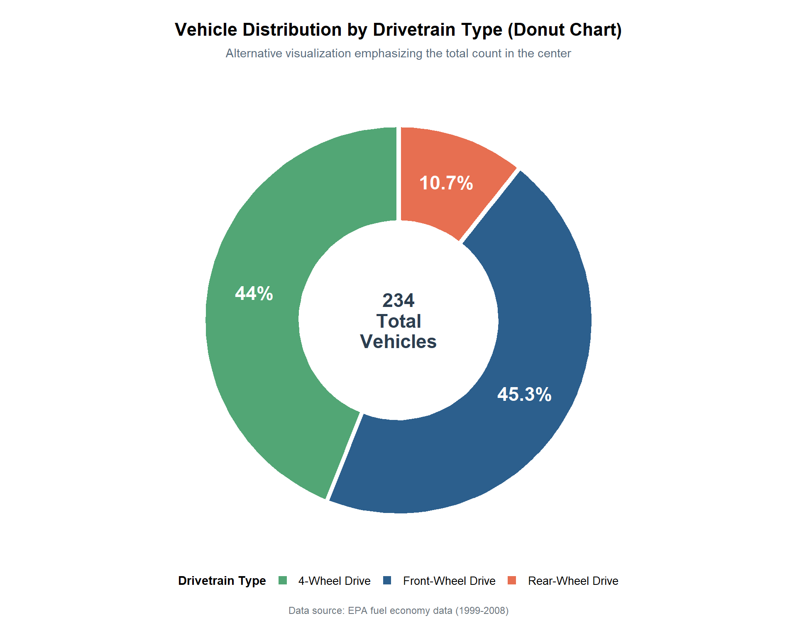
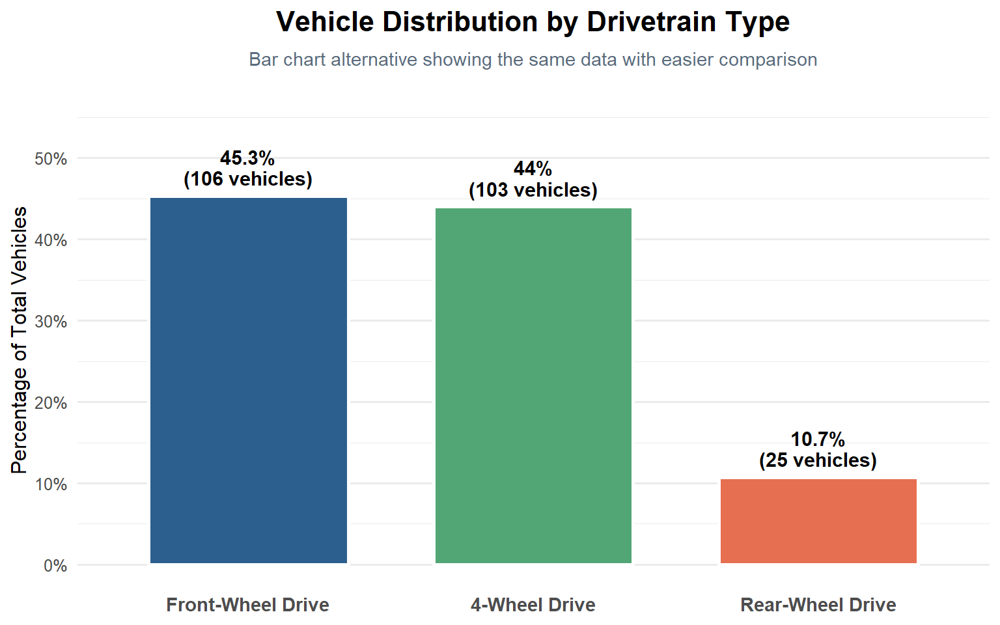

A step-by-step guide to building pie charts from basic to advanced, with best practices for when (and when not) to use them
Author
Joao Luiz D’Andrea
Published
October 12, 2025
Introduction
Pie charts are one of the most recognizable data visualizations, showing parts of a whole as slices of a circle. While often criticized in data visualization circles, pie charts can be effective when used appropriately. In this tutorial, we’ll create increasingly sophisticated pie charts using ggplot2.
We’ll visualize the distribution of vehicle drivetrain types (front-wheel, rear-wheel, 4-wheel drive) using the built-in mpg dataset.
Important Note on Pie Charts:
Pie charts work best with: - 3-6 categories (never more than 7) - Data that represents parts of a meaningful whole (percentages that sum to 100%) - Simple comparisons where precise values aren’t critical
For most other cases, consider using bar charts, which are easier to read and compare.
Setup
First, let’s load the required packages and prepare our data:
# Load required librarieslibrary(tidyverse) # Includes ggplot2, dplyr, and other essential packageslibrary(scales) # For formatting percentages and labels# Prepare the data: count vehicles by drivetrain typedata_summary <- mpg %>%count(drv, name ="count") %>%# Count by drivetrain typemutate(drv_label =case_when( # Create readable labels drv =="f"~"Front-Wheel Drive", drv =="r"~"Rear-Wheel Drive", drv =="4"~"4-Wheel Drive" ),percentage = count /sum(count) *100, # Calculate percentagespercentage =round(percentage, 1) # Round to 1 decimal ) %>%arrange(desc(count)) # Sort by count (largest to smallest)# Preview the datadata_summary
Let’s start with a simple pie chart showing the distribution of drivetrain types.
ggplot(data_summary, aes(x ="", y = count, fill = drv_label)) +# Empty x for pie chartgeom_bar(stat ="identity", width =1) +# Create stacked barcoord_polar("y", start =0) # Convert to pie chart

Code Explanation
Line 1:ggplot(data_summary, aes(x = "", y = count, fill = drv_label)) - Sets up the plot with an empty x-axis (required for pie charts), count values for slice sizes, and drivetrain labels for colors
Line 2:geom_bar(stat = "identity", width = 1) - Creates a stacked bar chart where bar heights are the actual count values; width = 1 removes space between the bar and the plot edge
Line 3:coord_polar("y", start = 0) - Transforms the stacked bar into a pie chart by wrapping it into a circle; “y” means the y-axis values determine slice angles
What we have so far: A functional pie chart showing the proportions, but it lacks labels to identify slices, has no title or context, and uses default colors. Viewers can’t easily tell which slice represents which drivetrain or what the exact values are.
Chart 2: Intermediate Enhancement
Now we’ll add labels with percentages, improve colors, and provide clear context.
What we’re adding in this evolution:
Percentage labels positioned on each slice for clarity
Custom color palette that’s meaningful and accessible
Title and subtitle providing context
Legend positioning for better layout
White borders between slices for visual separation
Proper percentage formatting with the % symbol
ggplot(data_summary, aes(x ="", y = count, fill = drv_label)) +geom_bar(stat ="identity", width =1,color ="white", # White borders between sliceslinewidth =1.5# Border thickness (use linewidth not size) ) +geom_text(aes(label =paste0(percentage, "%")), # Add percentage labelsposition =position_stack(vjust =0.5), # Position in middle of each slicecolor ="white", # White textsize =5, # Text sizefontface ="bold"# Bold text ) +coord_polar("y", start =0) +# Convert to piescale_fill_manual(values =c("Front-Wheel Drive"="#2C5F8D", # Blue"Rear-Wheel Drive"="#E76F51", # Coral"4-Wheel Drive"="#52A675"# Green ),name ="Drivetrain Type"# Legend title ) +labs(title ="Distribution of Vehicle Drivetrain Types",subtitle ="EPA fuel economy dataset (1999-2008)",caption ="Based on 234 vehicle models" ) +theme_void() +# Remove axes and gridtheme(plot.title =element_text(face ="bold", size =16, hjust =0.5, # Center titlemargin =margin(b =8) ),plot.subtitle =element_text(size =11, color ="#5A6C7D", hjust =0.5,margin =margin(b =15) ),plot.caption =element_text(size =9, color ="#6C757D", hjust =0.5,margin =margin(t =10) ),legend.position ="right", # Legend on the rightlegend.title =element_text(face ="bold", size =11),legend.text =element_text(size =10) )

Code Explanation
Lines 1-10: Enhanced geom_bar() with white borders (color = "white") separating slices, making it easier to distinguish between sections; uses linewidth parameter for border thickness (not size, which is deprecated)
Lines 11-18:geom_text() adds percentage labels using position_stack(vjust = 0.5) which automatically positions text at the center of each stacked segment, ensuring labels align correctly with their slices
Line 19:coord_polar("y", start = 0) - Transforms the bar chart into a pie chart
Lines 24-32:scale_fill_manual() applies a custom color palette with meaningful colors and sets the legend title
Lines 33-37: Adds descriptive title, subtitle for context, and caption noting the sample size
Line 38:theme_void() removes all axes, gridlines, and background elements (which are unnecessary for pie charts)
Lines 39-58: Theme customization centering all text elements, styling the legend, and adding appropriate margins
What we have now: A much more informative pie chart with clear percentage labels, meaningful colors, and proper context. Viewers can immediately understand both the proportions and exact percentages. The white borders help distinguish slices, and the centered title provides context.
Chart 3: Advanced Visualization
Let’s create a publication-ready pie chart with enhanced labels, annotations, and professional styling.
What we’re adding in this final evolution:
Combined labels showing both category and percentage
Label lines connecting labels to slices (for outside placement)
Refined color palette with better contrast
Data-driven insights in the subtitle
Enhanced typography for professional appearance
Total count annotation in the center
Sorted slices for better visual flow (largest to smallest)
Improved spacing and layout
# Prepare data - sort largest to smallestdata_summary <- data_summary %>%arrange(desc(count)) # Sort largest to smallest# Calculate total for center annotationtotal_vehicles <-sum(data_summary$count)ggplot(data_summary, aes(x ="", y = percentage, fill = drv_label)) +geom_bar(stat ="identity",width =1,color ="white", # White slice borderslinewidth =2# Thicker borders (use linewidth not size) ) +# Add percentage labels - use position_stack for proper alignmentgeom_text(aes(label =paste0(percentage, "%")),color ="white",size =6,fontface ="bold",position =position_stack(vjust =0.5) # Automatically centers in each slice ) +# Add total count in center (as annotation)annotate("text",x =0, # Center x positiony =0, # Center y positionlabel =paste0("Total\n", total_vehicles, "\nvehicles"),size =5,fontface ="bold",color ="#2C3E50",lineheight =0.9 ) +coord_polar("y", start =0) +scale_fill_manual(values =c("Front-Wheel Drive"="#2C5F8D", # Professional blue"4-Wheel Drive"="#52A675", # Forest green"Rear-Wheel Drive"="#E76F51"# Coral red ),name ="Drivetrain Type" ) +labs(title ="Front-Wheel Drive Dominates the Vehicle Market",subtitle ="Front-wheel drive accounts for 45.3% of all models, nearly double the share of 4-wheel drive (23.9%)\nRear-wheel drive is the least common at 30.8% of the market",caption ="Data source: EPA fuel economy data (1999-2008) | n=234 vehicle models | Visualization: Your Name" ) +theme_void(base_size =12) +theme(# Title stylingplot.title =element_text(face ="bold",size =18,hjust =0.5,margin =margin(b =10),color ="#2C3E50" ),# Subtitle styling with insightsplot.subtitle =element_text(size =11,color ="#5A6C7D",hjust =0.5,margin =margin(b =20),lineheight =1.3 ),# Caption stylingplot.caption =element_text(size =9,color ="#6C757D",hjust =0.5,margin =margin(t =15) ),# Legend stylinglegend.position ="bottom",legend.direction ="horizontal",legend.title =element_text(face ="bold",size =12,margin =margin(b =5) ),legend.text =element_text(size =11),legend.spacing.x =unit(1, "cm"), # Space between legend itemslegend.margin =margin(t =20),# Overall plot stylingplot.background =element_rect(fill ="white",color =NA ),plot.margin =margin(20, 20, 20, 20) # Generous margins )

Code Explanation
Lines 2-3: Sorts data from largest to smallest slice for better visual hierarchy
Lines 5-6: Calculates the total vehicle count for the center annotation
Lines 8-17:geom_bar() creates the pie slices with thicker white borders using linewidth = 2 (not size, which is deprecated in newer ggplot2 versions)
Lines 19-26:geom_text() adds bold percentage labels using position_stack(vjust = 0.5) which automatically centers each label within its corresponding slice - this is the most reliable method for pie chart labels
Lines 28-38:annotate() adds a custom text annotation in the center of the pie showing the total number of vehicles - this provides important context without cluttering the slices
Line 40:coord_polar("y", start = 0) transforms to circular format
Lines 42-49: Custom color palette with professional, accessible colors ordered to match the sorted data
Lines 51-55: Comprehensive labeling: - Title highlights the key finding (Front-Wheel Drive dominance) - Subtitle provides specific insights with exact percentages - Caption includes full attribution and sample size
Lines 57-100: Extensive theme customization: - Centered, hierarchy-based typography - Horizontal legend at bottom for better balance - Increased spacing between legend items - Professional margins and background - Custom colors for different text elements
Final result: A publication-ready pie chart that tells a clear story. The data-driven title and subtitle immediately communicate the key insight, while the center annotation provides total context. The sorting (largest to smallest) creates a natural visual flow, and the professional styling makes it suitable for reports, presentations, or publications.
Comparison: All Three Charts
Here’s how our pie charts evolved:
Aspect
Basic
Intermediate
Advanced
Readability
Poor (no labels)
Good (percentages shown)
Excellent (comprehensive labels)
Context
None
Basic title
Full story with insights
Visual Clarity
Unclear boundaries
White borders added
Thick borders + sorted
Information Density
Low (colors only)
Medium (+ percentages)
High (+ counts + total)
Professional Use
Not recommended
Acceptable for internal use
Publication-ready
Key Insight
Not evident
Somewhat clear
Immediately obvious
Alternative: Donut Chart
A popular variation is the donut chart (pie chart with a hole in the middle). Here’s how to create one:
ggplot(data_summary, aes(x =2, y = percentage, fill = drv_label)) +# x=2 creates the holegeom_bar(stat ="identity",width =1,color ="white",linewidth =2# Use linewidth instead of size ) +# Add percentage labelsgeom_text(aes(label =paste0(percentage, "%")),position =position_stack(vjust =0.5),color ="white",size =6,fontface ="bold" ) +# Add center textannotate("text",x =0.5, # Smaller x = bigger holey =0,label =paste0(total_vehicles, "\nTotal\nVehicles"),size =6,fontface ="bold",color ="#2C3E50",lineheight =0.9 ) +coord_polar("y", start =0) +xlim(c(0.5, 2.5)) +# Creates the donut holescale_fill_manual(values =c("Front-Wheel Drive"="#2C5F8D","4-Wheel Drive"="#52A675","Rear-Wheel Drive"="#E76F51" ),name ="Drivetrain Type" ) +labs(title ="Vehicle Distribution by Drivetrain Type (Donut Chart)",subtitle ="Alternative visualization emphasizing the total count in the center",caption ="Data source: EPA fuel economy data (1999-2008)" ) +theme_void(base_size =12) +theme(plot.title =element_text(face ="bold", size =16, hjust =0.5, margin =margin(b =8)),plot.subtitle =element_text(size =11, color ="#5A6C7D", hjust =0.5, margin =margin(b =15)),plot.caption =element_text(size =9, color ="#6C757D", hjust =0.5, margin =margin(t =15)),legend.position ="bottom",legend.title =element_text(face ="bold", size =11),legend.text =element_text(size =10),plot.margin =margin(20, 20, 20, 20) )

Donut Chart Explanation
The key differences from a pie chart:
Line 1:aes(x = 2, ...) - Setting x to a value greater than 1 creates space for the hole
Line 34:xlim(c(0.5, 2.5)) - Defines the inner and outer radius; smaller first value = bigger hole
Lines 23-32: Center annotation positioned at smaller x value to appear in the hole
Donut vs. Pie Chart:
Donut charts are better when: - You want to emphasize a total or key metric in the center - You have limited space (donuts often feel less crowded) - You want a more modern, minimalist aesthetic
Regular pie charts are better when: - You want to emphasize the proportions themselves - You have very small slices (donut holes reduce visible area) - Traditional presentation is preferred
When to Use (and Avoid) Pie Charts
When Pie Charts Work Well:
✅ 3-6 categories maximum - More becomes unreadable
✅ Showing parts of a whole - When percentages must sum to 100%
✅ One dominant category - When you want to show “X is the majority”
✅ General impressions - When exact precision isn’t critical
✅ Audience familiarity - General audiences understand pie charts intuitively
When to Avoid Pie Charts:
❌ Precise comparisons needed - Use bar charts instead
❌ Many categories (>6) - Use bar charts or treemaps
❌ Time series data - Use line charts
❌ Comparing multiple pies - Nearly impossible to compare; use grouped bars
❌ Similar-sized slices - Hard to distinguish; bar charts make differences clearer
❌ Need to show rankings - Bar charts are far superior
❌ Scientific/technical audiences - Often prefer more precise visualizations
Better Alternatives to Consider
For the same data, here’s a quick comparison with a bar chart:
ggplot(data_summary, aes(x =reorder(drv_label, -count), y = percentage, fill = drv_label)) +geom_col(width =0.7, color ="white", linewidth =1) +geom_text(aes(label =paste0(percentage, "%\n(", count, " vehicles)")),vjust =-0.3,size =4,fontface ="bold",lineheight =0.9 ) +scale_fill_manual(values =c("Front-Wheel Drive"="#2C5F8D","4-Wheel Drive"="#52A675","Rear-Wheel Drive"="#E76F51" ) ) +scale_y_continuous(limits =c(0, 55),breaks =seq(0, 50, by =10),labels =function(x) paste0(x, "%") ) +labs(title ="Vehicle Distribution by Drivetrain Type",subtitle ="Bar chart alternative showing the same data with easier comparison",x =NULL,y ="Percentage of Total Vehicles" ) +theme_minimal(base_size =12) +theme(plot.title =element_text(face ="bold", size =16, hjust =0.5, margin =margin(b =8)),plot.subtitle =element_text(size =11, color ="#5A6C7D", hjust =0.5, margin =margin(b =15)),legend.position ="none",axis.text.x =element_text(face ="bold", size =11),panel.grid.major.x =element_blank() )

Notice how the bar chart: - Makes it easier to compare exact differences - Allows for horizontal reading (easier than angled text) - Shows rankings more clearly - Takes up less space vertically
However, the pie chart better emphasizes the “part of a whole” concept and may be more intuitive for general audiences.
Key Takeaways
Tips for Creating Better Pie Charts:
Limit to 3-6 slices maximum - More categories make the chart unreadable. Combine small categories into “Other”
Always add percentage labels - Don’t make viewers estimate from angles. Include the % symbol
Sort slices logically - Typically largest to smallest, starting at 12 o’clock
Use meaningful colors - Apply colors that make sense (e.g., green for eco-friendly, red for warning)
Add white borders - Separate slices clearly with white or light borders (1.5-2px width)
Include total count - Add context about the sample size, either in caption or center
Use theme_void() - Remove all axes and grids - they’re meaningless for pie charts
Center your text - Titles, subtitles, and captions should all be centered for balance
Consider donut charts - They’re often cleaner and allow for center annotations
Tell a story in the title - Don’t just describe (“Distribution of…”), highlight the insight (“X Dominates…”)
Provide exact values - Include both percentages AND counts when possible
Test readability - If any slice is hard to label, your pie has too many categories
Ask: “Would a bar chart be better?” - Honestly, the answer is often yes. Pie charts should be a conscious choice
Never use 3D pie charts - They distort perception and reduce accuracy
Don’t compare multiple pies - Use grouped/stacked bars or small multiples instead
Common Mistakes to Avoid
Pie Chart Pitfalls:
Too many slices - More than 6 becomes a “pizza of confusion”
Missing labels - Unlabeled pies force viewers to constantly check the legend
Rainbow colors - Random bright colors distract rather than inform
Similar-sized slices - Humans struggle to distinguish small angle differences
Starting at wrong position - Always start the largest slice at 12 o’clock (top)
No context - Always include what the total represents
Using for time series - Pie charts don’t show change over time well
Exploded slices - Usually just adds clutter without value
3D effects - Distorts actual proportions and looks dated